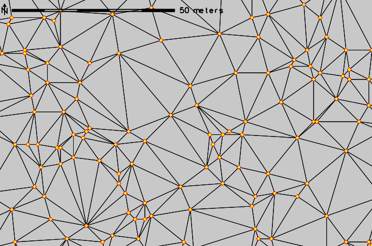

DESCRIPTION
v.delaunay uses an existing vector points map (input)
to create a Delaunay triangulation vector map (output).
Delaunay triangulation example (red-yellow points are the data points from which the triangulation was generated):

EXAMPLE
Commands used with the North Carolina dataset to create the above figure (subset shown in figure).
g.region n=220750 s=219950 w=638300 e=639000 -p
v.delaunay input=elev_lid792_randpts output=elev_lid792_randpts_delaunay
REFERENCES
Leonid Guibas and Jorge Stolfi, (1985). Primitives for the
Manipulation of General Subdivisions and the Computation of
Voronoi Diagrams, ACM Transactions on Graphics, Vol 4, No. 2,
April 1985, Pages 74-123
SEE ALSO
v.voronoi,
v.hull
AUTHORS
Martin Pavlovsky, Google Summer of Code 2008, Student
Paul Kelly, Mentor
Based on "dct" by Geoff Leach, Department of Computer Science, RMIT.